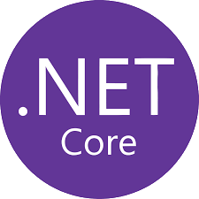
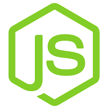

Mi vagyunk a duális diákok, duális alkalmazottak, de kik vagyunk valójában? Erre a kérdésre van egy nagyon egyszerű válasz, Informatikai ágon érdeklődő tanulók, akár technikumi, akár egyetemi, annak érdekében hogy még többet tudjunk fejlődni, minnél jobban értsünk a szakmánkhoz így ide jöttükn dolgozni és tanulni.
Elsődlegesek a diákok, technikumi vagy egyetemi akik nem csak egy szakmára hanem megbízható jövőre vágynak, kis csapatunk gyorsan összetartó csoportá kovácsolódott és bár sokan különbözünk tiszteljük és meghallgatjuk egymást hiszen a kooperációnak fontos eleme a kommunikáció.
Kint duális félnél sok különféle és érdekes technológiát tanulunk, használunk.

bármi és minden ami .NET, legyen egyszerű konzol alkalmazás, RESTful architektúrát alkalmazó Szerver vagy egy komplex asztali- és mobil alkalmazás.
Modern Frontend és mobil fejlesztésre alkalmas keretrendszer cégünk szinte minden webes projektjénél használja.

Gyorsan és egyszerűen felépíthető backendekre ott a Node.js, a javascript alapú rendszereink ezen technológia segítségével készültek.
Ha úgy érzed itt a helyed, jelentkezz bátran, ha kérdésed van tedd fel nyugodtan.